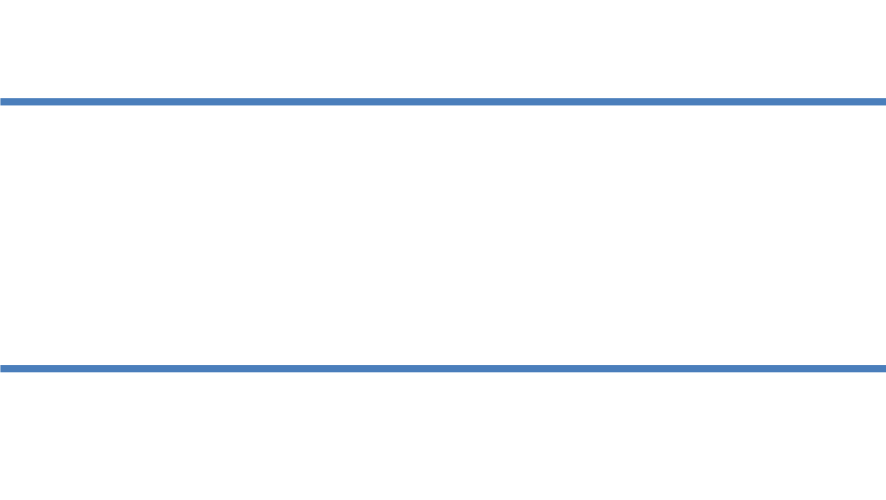

First lets draw two blue parallel lines like this:
Now lets draw a diagonal red line that intersects through the two blue lines at two points (A and B):
We know that the alternate interior angles equal, so lets call them both x:
Now Lets add a yellow line that intersects through point B and the other blue line:

There are two alternate interior angles touching the yellow line, we will call them both y:
Also lets call the angle between the red and yellow line as angle a:

Since the angle on a straight line is 180 degrees, then angle x, a and y must add to 180 degrees. We also know that the yellow line, red line and upper blue line make a triangle with angles x, a and y, this means that angles in that traingle must add up to 180 degrees. No matter what the slope of the red and yellow line is and no matter how far the blue lines are, the sum of the angles in the triangle always add to 180 degrees.